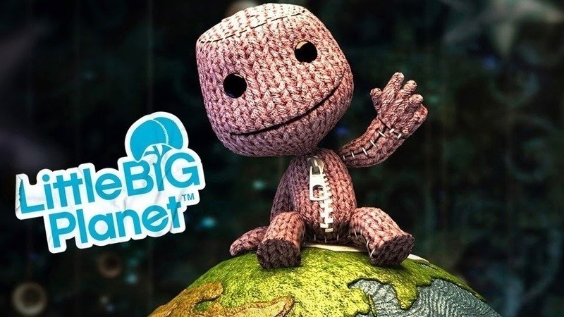
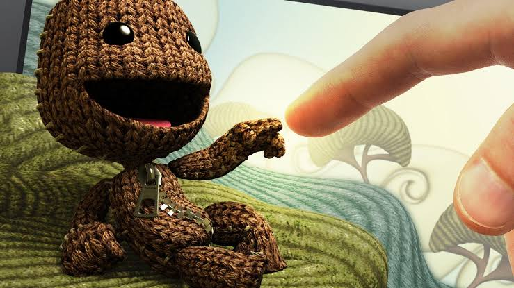

Matias Espinar
Por Matias Espinar
Publicado: Septiembre 1, 2026 18:00 pmLittleBigPlanet es mucho más que un simple videojuego de plataformas; es un vibrante universo interactivo que revolucionó la forma en que los jugadores se relacionan con el contenido digital. Lanzado originalmente como una de las insignias de PlayStation, este título nos presenta al entrañable Sackboy, un pequeño y expresivo héroe de tela que viaja por mundos oníricos construidos con materiales cotidianos como cartón, madera, esponjas y botones. Su filosofía central, "Jugar, Crear y Compartir", rompió la barrera entre el jugador y el desarrollador, permitiendo que la imaginación fuera el único límite dentro de este encantador entorno impulsado por físicas realistas.

A nivel de jugabilidad, la franquicia destaca por su enfoque cooperativo y sus robustas herramientas de creación, las cuales son exactamente las mismas que utilizaron los desarrolladores para construir el modo historia. Con el paso del tiempo, el juego expandió su universo más allá de las consolas de sobremesa, llevando su inmensa comunidad y su motor de creación a sistemas portátiles como la PlayStation Vita, lo que permitió a los usuarios diseñar y explorar sus propios mundos en cualquier lugar. Gracias a esto, la comunidad logró generar millones de niveles únicos, ofreciendo desde desafiantes circuitos clásicos hasta minijuegos de géneros completamente distintos y mecanismos lógicos complejos, todo construido bloque a bloque.

Tú eres el Creador. En LittleBigPlanet, tienes el poder de dar vida y transformar el entorno que rodea a Sackboy.En definitiva, LittleBigPlanet brilla como una de las obras más creativas, carismáticas y artísticamente ricas de la industria del videojuego. Su impecable estética de manualidad, combinada con una banda sonora maravillosamente ecléctica, lo convierten en una experiencia atemporal que fomenta el trabajo en equipo y el pensamiento lógico. Es una verdadera celebración del diseño y la creatividad que demostró que, al poner las herramientas adecuadas en las manos del público, cualquier persona puede dar vida a sus ideas, dejando un legado imborrable en el mundo del entretenimiento.
Siempre recordaré con mucho cariño las tardes que pasaba jugando LBP 2 en mi PlayStation 3.
| Titulo | Año | Plataforma |
|---|---|---|
| LittleBigPlanet | 2008 | PlayStation 3 |
| LittleBigPlanet (PSP) | 2009 | PlayStation Portable |
| LittleBigPlanet 2 | 2011 | PlayStation 3 |
| LittleBigPlanet PS Vita | 2012 | PlayStation Vita |
| LittleBigPlanet 3 | 2014 | PlayStation 3, PlayStation 4 |
| Sackboy: A Big Adventure | 2020 | PlayStation 4, PlayStation 5, PC |